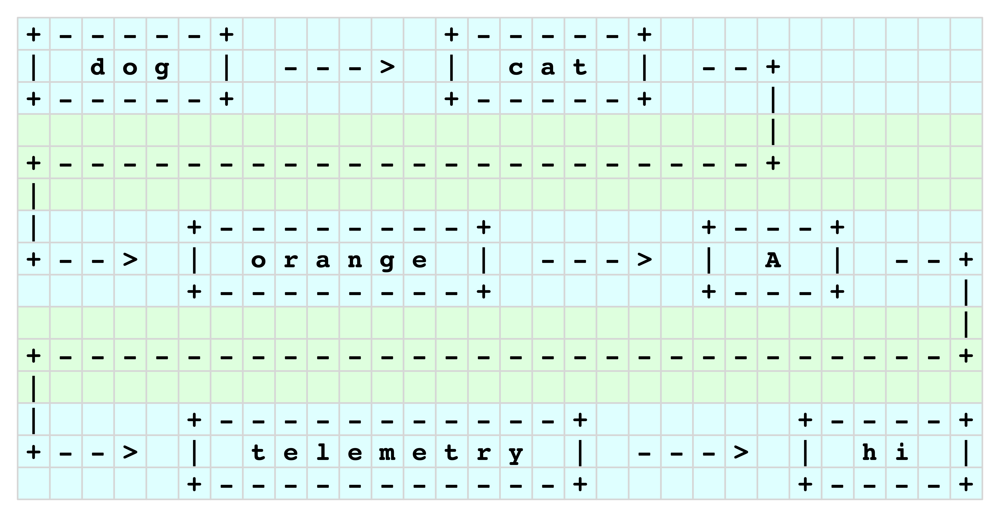
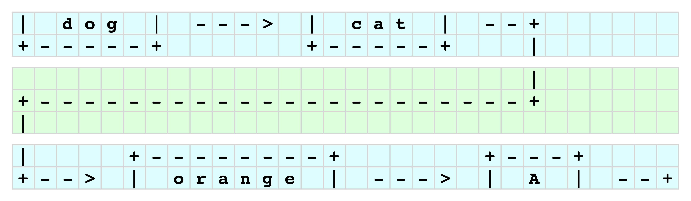

Summer 2020 Midterm grading notes#
Problem 1#
The solution to this problem was specified in the requirement to extend the original class. Extensions allow us to add and change parts of a class that we are not allowed to modify. There are two modifications to include in the extended class: first a new node to track the middle of the list. We already have two specially named nodes that track the beginning and the and of the list (called Node head and Node tail respectively). All we here is a third specially named node:
public class LeoLinkedList extends OurLinkedList {
Node middle;
That’s it really, for the first part of this problem.
The second part for this problem is to ensure the new Node middle points to the middle of the list. We need to make an assignment here, similar to the assignments for nodes head and tail. In the base class (OurLinkedList), the assignments for nodes tail and head are part of method addNode. That’s where the assignment for middle belongs. But we cannot modify the base class, so we have to replicate the method addNode to our derived class, and instruct the compiler to override the base method.
@Override
public void addNode(String v) {
if (!nodeExists(v)) {
Node newNode = new Node(v);
size++;
if (head == null) {
head = newNode;
tail = head;
middle = head;
} else {
tail.next = newNode;
tail = newNode;
if ( size % 2 == 1) {
middle = middle.next;
}
}
}
}
The code of the derived addNode is identical to the base code except for two places. When the list is empty (head==null), we make the first node the list’s head and tail. In the derived method above, we also make that first node the list’s middle. If the list is not empty, we add an if-block to advance the middle node to its next node, every second insertion (whenever size%2==1).
Problem 2#
While simple in appearance, this problem requires some serious analysis first. We are given a restriction: lines cannot exceed 90 characters. The schematic we are provided with, suggests that we cannot hyphenate the contents of nodes and wrap them in the next line block. And, as long we we have nodes to print, each line block should end with the wrap pattern leading from the last node in that block to the first node in the next line block.

We begin by studying the output pattern. In the example to the right we limit the line length to 40 characters, for clarity. Line-blocks are color-coded, also for clarity. We observe that there are two types of line blocks. Let’s call them content blocks (shown in pale blue) and connecting blocks (shown in pale green). As we study the layout, we notice repeating patterns, shown in more detail below.

The patterns we notice are:
Corner element is a
+.Horizontal line element is a
-.Vertical line element is a
|.Arrowhead element is a
>.The string value of a node is preceded and trailed by a single space.
The arrow connecting two nodes on the same content block is preceded and trailed by a single space. We call this a
betweebArrow.The arrow from the last node on a content block to the first node on the next content block, has the shape
--+. We name this appendage,snakeTail.The last line of a content block includes a vertical element for the arrow that connects to the next content block.
The first line of a content block (other than the first such block) contains a vertical element from the arrow from the previous node.
The arrowhead for the first node in subsequent content blocks has two horizontal elements instead of the three we see in the arrows between nodes. We name this String
snakeHead.
With these observations, we can begin to estimate how many characters we need to display a node. First we look at two special cases: the head and tail nodes. The head node requires head.value.length()+2+2 spaces to print and another betweebArrow.lenght()+2 for its pointer to the next node, for a total of head.value.length()+betweebArrow.length()+6 characters. The tail node requires only tail.value.length()+4 characters because it doesn’t have an arrow pointing to another node.
Next we move our attention to the pattern within a content block (that’s the block with the nodes’ content, shown in pale blue). Here, we notice that each node requires node.value.length()+betweenArrow.length()+6 characters except for the head node (as discussed above). There are two more exceptions: the last node in a block line (as long as it is not the tail node) requires node.value.length()+snakeTail.length()+5 characters. And the first node in every content block except the first such block, is offset by snakeHead.length()+1 characters to the right.

With these character counts in place, we can begin constructing both content and connecting blocks. For this step, we need to look at the structure of these blocks. Each block comprises three lines. Let’s call the first line the upperFrame of the block, the second lines its middleFrame, and the last line the lowerFrame.
At this point our analysis is complete and we can begin to plan how to build the functionality we need. Obviously we need at least a public method to invoke the printout, so let’s call it printList. We can put all the functionality in that method, or we can create a few private methods for printList to use. Either approach is fine. Usually, we start with a monolithic method and then we carve its code out to private methods, for reusability and clarity.
The overall logic and structure is demonstrated in the code below. The code is monolithic, i.e., it does not call its own private methods. Fundamentally, it is a large loop that looks at each node, and whether or not it fits to be displayed within the remaining space of 90 characters. If not, it terminates the current content block, adds a connecting block, initiates a new content block, and places the node there, and so on.
1/**
2 * Prints the string contents of nodes in a linked list, in a snake-path whose
3 * lines do not exceed a given WIDTH (in characters) in length. The printout
4 * format requires three strings:
5 *
6 * formatted required
7 * output strings
8 *
9 * +-----+ .... upperFrame string
10 * | cat | .... content string
11 * +-----+ .... lowerFrame string
12 *
13 * Note that when transitioning to a new line, strings content and lowerFrame
14 * acquire additional content to begin the snake path to the next line, and
15 * after printed, string upperFrame is initialized with the vertical element of
16 * the snake path working its way to the first node of the next line.
17 *
18 * +-----+
19 * | dog | --+
20 * +-----+ | .... lowerFrame
21 * |
22 * +--------- ... ------------+
23 * |
24 * upperFrame .... | +-----+
25 * +--> | cat | ---> ...
26 * +-----+
27 */
28public void printList() {
29 if ( size > 0 ) {
30 /** Drawing elements */
31 final String verticalElement = "|";
32 final String cornerElement = "+";
33 final String lineElement = "-";
34 final String arrowElement = ">";
35 final String spaceElement = " ";
36
37 /** Misc constants */
38 final int arrowLength = 3;
39 final int endOfLineLength = 2;
40 final int WIDTH = 90;
41
42 /**
43 * OVERHEAD is the space required around the contents of a node, for example
44 * if node.value = "dog",
45 * the printout will be
46 * +-----+
47 * | dog |
48 * +-----+
49 * The two vertical bars and the two spaces surrounding dog, are the overhead space.
50 */
51 final int OVERHEAD
52 = verticalElement.length() + // |_ // This variable assignment
53 spaceElement.length() + // | _ // is just an addition of
54 spaceElement.length() + // | _ // mostly 1s but in a way
55 verticalElement.length() + // | |_ // that allows us to change
56 spaceElement.length() + // | | _ // the drawing elements
57 arrowLength + // | | ---_ // without redoing the
58 arrowElement.length() + // | | --->_ // overhead space
59 spaceElement.length(); // | | ---> _ // computation.
60
61 String upperFrame = new String();
62 String lowerFrame = new String();
63 String middleFrame = new String();
64 String snake = new String();
65 String snakeTail = new String();
66
67 /** How many characters have we used for far? */
68 int lineLength = 0;
69
70 String nodeValue;
71 String frontArrow = "";
72 int frontSpace = 0;
73 boolean newline = false;
74 boolean nothingPrinted = true;
75 int nodeValueLength, spaceNeeded;
76
77 Node currentNode = head;
78
79 do {
80
81 nodeValue = currentNode.value;
82 nodeValueLength = nodeValue.length();
83 spaceNeeded = nodeValueLength + OVERHEAD;
84 lineLength = lineLength + spaceNeeded;
85
86 if ( lineLength > WIDTH ) {
87 // System.out.println("... line width exceeded");
88 // next line
89 newline = true;
90 lineLength = 0;
91 }
92
93 if (newline) {
94
95 System.out.println(upperFrame);
96 System.out.println(middleFrame+cornerElement);
97 System.out.println(lowerFrame+verticalElement);
98 System.out.println(spaceElement.repeat(middleFrame.length())+verticalElement);
99 System.out.println(cornerElement+lineElement.repeat(middleFrame.length()-1)+cornerElement);
100 System.out.println(verticalElement);
101 // print snake arrow
102
103 nothingPrinted = false;
104
105 upperFrame = verticalElement + spaceElement.repeat(endOfLineLength+1);
106 lowerFrame = spaceElement.repeat(endOfLineLength+2);
107 middleFrame = cornerElement;
108 frontArrow = lineElement.repeat(endOfLineLength) + arrowElement + spaceElement;
109 frontSpace = frontArrow.length()-3;
110 lineLength = lineLength + middleFrame.length() + frontSpace;
111 newline = false;
112
113 } else {
114 //System.out.println("... no new line");
115 frontSpace = 0;
116 frontArrow="";
117 }
118
119 upperFrame
120 = upperFrame
121 + spaceElement.repeat(frontSpace)
122 + cornerElement
123 + lineElement.repeat(nodeValueLength+2*spaceElement.length())
124 + cornerElement
125 + spaceElement
126 + spaceElement.repeat(arrowLength+1)
127 + spaceElement;
128
129 lowerFrame
130 = lowerFrame
131 + spaceElement.repeat(frontSpace)
132 + cornerElement
133 + lineElement.repeat(nodeValueLength+2*spaceElement.length())
134 + cornerElement
135 + spaceElement
136 + spaceElement.repeat(arrowLength+1)
137 + spaceElement;
138
139 middleFrame
140 = middleFrame
141 + frontArrow
142 + verticalElement + spaceElement
143 + nodeValue
144 + spaceElement + verticalElement
145 + spaceElement
146 + lineElement.repeat(arrowLength) + arrowElement
147 + spaceElement;
148
149 lineLength = lineLength + middleFrame.length();
150
151 currentNode = currentNode.next;
152
153 } while (currentNode.next != null);
154
155 if (nothingPrinted || currentNode.next==null) {
156 System.out.println(upperFrame);
157 System.out.println(middleFrame);
158 System.out.println(lowerFrame);
159 }
160 }
161} // method printList
Problem 3 (bonus)#
Compared to problem 2, this was an easy one. The general case is to identify the node previous to the one to be removed and have its next field mapped to the node after the one to be removed. There are special cases, to be handled directly:
* Removing the head node: in this case head=head.next; does the trick.
* Removing the tail node: we find the node for which .next==tail, and we make it tail.
* Removing the node in a list with size==1: we empty the list: head=null;
* Removing a node in a list with size==2. In this case either tail=head; or head=tail;
Problem 4#
The easiest solution to this problem is to swap the .value fields of the corresponding nodes.
Problem 5#
This is also a straight-forward problem, with a few special cases:
* There is no previous node when size==1.
* When size==2 the previous node is head.
For size>2, we simply conduct a traversal of the list.